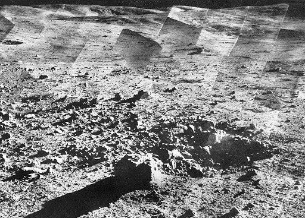
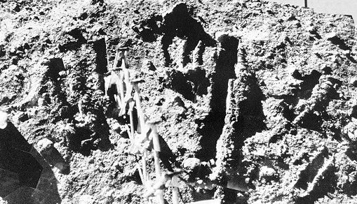
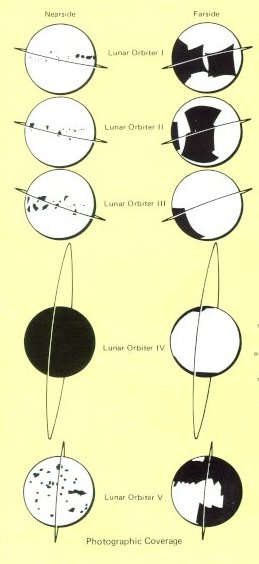
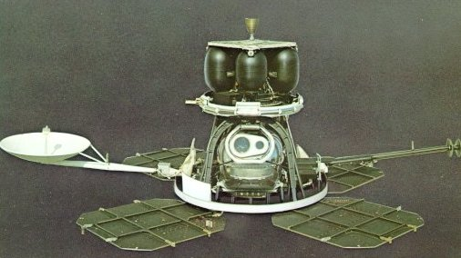

|
| The equatorial Apollo landing zone with its precursor Ranger and Surveyor landing sites. |
|  |
| The rolling highlands north of Tycho are portrayed with remarkable clarity in this mosaic assembled from among Surveyor VII's 21,038 photographs. To estimate scale, the boulder in the foreground is 2 feet across, the crater about 5 feet wide, and the far hills and ravines some 8 miles distant. |
|  |
| Surveyor VII's "garden" was a heavily worked-over area next to the spacecraft. Trenches were dug with the articulated scoop to give data on the mechanical properties of the surface. At left is the alpha-backscattering instrument that provided accurate measurements of the chemical composition of the surface. |
|  | Lunar Orbiter was planned for use in conjunction with Surveyor; one spacecraft class was to sample the surface of the Moon, and the other was to map potential Apollo landing sites. Five Orbiters were flown, so successfully that they returned not only precision stereo-photography of all contemplated landing areas but also photographed virtually the entire Moon, including the far side. Included in the photographs returned were the landed Surveyor I, the impact crater caused by Ranger VIII, and many breathtaking images of high scientific value. Orbiter coverage is shown at the left. |
|
|
| The equatorial Apollo landing zone with its precursor Ranger and Surveyor landing sites. |
|  |
| The two-eyed robot above is the spacecraft that mapped the Moon for Apollo planners. It was built by Boeing for the NASA Langley Research Center, and launched by an Atlas-Agena. Weighing 850 pounds, it drew electrical power from the four solar-cell arrays shown, which delivered a maximum of 450 watts. The rocket motor at top provided velocity changes for course corrections. Guidance was provided by inertial reference (three-axis gyros), celestial reference (Sun and Canopus sensors), and cold-gas jets to give attitude control. Because it would necessarily be out of touch with Earth during part of every orbit, it carried a computer-programmer that could accept and later carry out up to 16 hours of automatic sequenced operation. |

| It was in its photo system that Orbiter was most unconventional. Other spacecraft took TV images and sent them back to Earth as electrical signals. Orbiter took photographs, developed them on board, and then scanned them with a special photoelectric system - a method that, for all its complications and limitations, could produce images of exceptional quality. One Orbiter camera could resolve details as small as 3 feet from an altitude of 30 nautical miles. A sample complication exacted by this performance: because slow film had to be used (because of risk of radiation fogging), slow shutter speeds were also needed. This meant that, to prevent blurring from spacecraft motion, a velocity-height sensor had to insure that the film was moved a tiny, precise, and compensatory amount during the instant of exposure. |